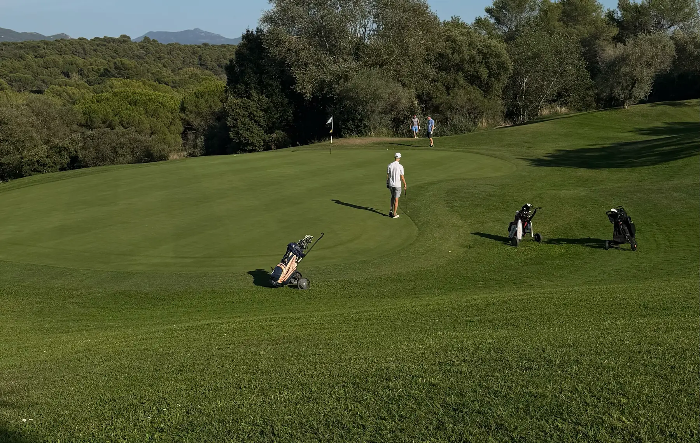

Texas scramble er en scramble for fire spillere: alle slår ud, I vælger det bedste slag, og alle slår næste slag derfra, til bolden er i hul. Normalt skal hver spillers udslag bruges et mindste antal gange på runden.

Hvordan spilles texas scramble?
- Alle fire slår ud. Hver spiller slår sit eget udslag fra teestedet.
- Vælg det bedste slag. Holdet vælger det slag, der ligger bedst.
- Alle slår derfra. Alle lægger deres bold ved det valgte slag og slår næste slag.
- Fortsæt, til bolden er i hul. I vælger det bedste slag hver gang, også på greenen. Holdet har én score pr. hul.
Hvor mange drives skal hver spiller have med?
Det står ikke i golfreglerne. Reglerne siger kun, at hver spillers udslag normalt skal bruges et mindste antal gange, og antallet bestemmer turneringen. Flere danske klubber kræver fire drives pr. spiller over 18 huller og to over 9 huller.
Hvad er forskellen på scramble og texas scramble?
En scramble kan spilles med hold på to, tre eller fire spillere. Texas scramble er altid fire på holdet, og der er normalt et krav om, hvor mange udslag hver spiller skal have med.
Hvordan regnes handicap i texas scramble?
Dansk Golf Union anbefaler, at holdet får 25 procent af spillehandicappet for den med det laveste, 20 procent for den næste, 15 procent for den tredje og 10 procent for den med det højeste. Har I spillehandicap 8, 14, 20 og 30, får holdet 2 plus 2,8 plus 3 plus 3, altså cirka 11 slag.
Spiller I scramble to og to, er anbefalingen 35 procent af det laveste og 15 procent af det højeste. Det er anbefalinger, så en turnering kan bestemme noget andet i sine betingelser.
Tæller texas scramble til handicap?
Nej. I Danmark skal en tællende runde være individuel, og i en scramble spiller du ikke din egen bold hele vejen.
Spørgsmål og svar
Hvad er texas scramble i golf?
En scramble for fire spillere, hvor alle slår ud, holdet vælger det bedste slag, og alle slår næste slag derfra. Normalt skal hver spillers udslag bruges et mindste antal gange.
Hvordan spilles texas scramble?
Alle fire slår ud, holdet vælger det bedste slag, og alle slår næste slag derfra. Sådan fortsætter I, til bolden er i hul, og holdet har én score pr. hul.
Hvad er reglerne for texas scramble?
Golfreglerne siger, at hver spillers udslag normalt skal bruges et mindste antal gange. Antallet og resten af betingelserne bestemmer turneringen.
Hvor mange drives skal man have med i texas scramble?
Det bestemmer turneringen. Flere danske klubber kræver fire drives pr. spiller over 18 huller og to over 9 huller.
Hvordan regnes handicap i texas scramble?
Dansk Golf Union anbefaler 25, 20, 15 og 10 procent af spillehandicappene fra det laveste til det højeste, lagt sammen til holdets handicap.
Tæller texas scramble til handicap?
Nej. I Danmark skal en tællende runde være individuel.
Golfsocial-appen
Dit golfhjem
Registrér dine runder til dit DGU-handicap, følg din udvikling, og se vennernes runder i feedet. Gratis at spille med vennerne, på iPhone og Android.